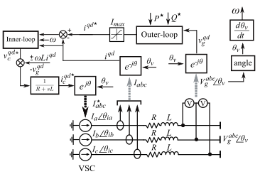
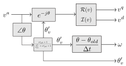
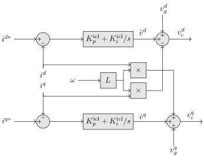
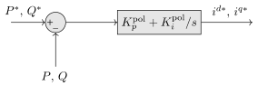
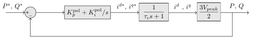
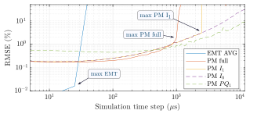
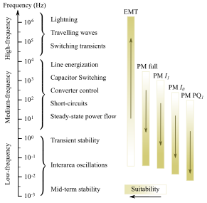

Full-Phasor Grid Following Voltage Source Converter
Context
Voltage Source Converters (VSC) are widely used in power systems for a variety of applications, such as wind and photovoltaic generation, High Voltage Direct Current (HVDC) transmission, and Flexible AC Transmission Systems (FACTS). The model described here is the Full-Phasor model of a grid-following VSC, which is a type of VSC that is synchronized with the grid, using its frequency and phase. This model, obtained from the many works developed at CITCEA-UPC (Centre dInnovaci Tecnolgica en Convertidors Esttics i Accionaments) such as [1], [2] and [3], is useful for studying medium to low-frequency phenomena of the VSC and its interaction with the grid.
Model use, assumptions, validity domain and limitations
The model described allows performing phasor studies of the dynamics of a grid-following voltage source converter. It is specially useful in applications where there are slow-transients that want to be studied, such as transient stability studies or interarea oscillations [1], allowing for fast simulations with bigger time steps than the EMT without losing precision on these types of phenomena.
The assumptions made are:
- The DC side of the converter is considered as an ideal DC voltage source \(E_{DC}\).
- The AC-side of the converter is connected to the grid through an AC filter formed by a resistance \(R\) and an inductance \(L\). It is represented as three current sources with magnitude and angle defined by the control system.
- The system is considered to be balanced, and the positive and negative sequence are not considered.
- The electrical variables are represented by phasors that rotate at the synchronous frequency of the grid in steady-state or quasi-steady-state.
- The complete control structure from the EMT Model, apart from the PLL, is preserved. Further simplifications are made in the models that derive from the Full-Phasor model.
The model has its limitations when performing high-frequency domain phenomena (\(>1\) kHz), as all the fast-dynamics are not considered since it uses algebraic equations instead of the differential equations that are used on the EMT model. It is not useful either to calculate unbalanced situation as the model is based on the positive sequence.
From this model, some approximations can be made to reduce the complexity of the model and speed up the simulation if the study to be performed does not require to cover some dynamics of the converter. These derived models can be consulted in Section 4
Model description
The model can be described with the following schematic:

Figure 1: Phasor Grid Following VSC scheme [2]
The main blocks of the model are: * The angle and frequency tracking block, which substitutes the PLL of the EMT model. * The Outer Loop, which provides active and reactive power control by setting a current reference from a power reference. * The Inner Loop, or Current Loop, which corrects the converter voltage to provide the reference current. * The transformation blocks, which transform the electrical variables from abc into qd0 and viceversa.
A detailed explanation of each block is provided in the following subsections.
Transformation blocks
Since we are dealing with phasors that rotate at the grid frequency, instead of instantaneous values, the transformation from the abc reference frame to the qd0 reference frame can be performed by cancelling or applying the rotation of the phasor.
Assuming we have a complex electrical variable \(x = Xe^{j\theta}\), where \(X\) is the amplitude and \(\theta\) is the angle of the variable, the transformation to the qd0 reference can be done by multiplying by \(e^{-j\theta_v}\).
For the abc variables, the phasors will be:
\[ \begin{align} x_{abc} = \begin{bmatrix} x_a \\ x_b \\ x_c \end{bmatrix} = \begin{bmatrix} Xe^{j\theta} \\ Xe^{j(\theta - \frac{2\pi}{3})} \\ Xe^{j(\theta + \frac{2\pi}{3})} \end{bmatrix} \end{align} \]
where \(X\) is the amplitude of the voltage or current, \(\theta\) is the angle of the voltage or current. Since the system is balanced, the transformation can be calculated using the \(a\)-phase measurement, and \(\theta_v = \theta\). The real and imaginary parts of the product of \(v_a e^{-j\theta_v}\) will give the \(v^q\) and \(v^d\) components of the voltage, respectively.
In case of unbalance system, the method of symmetrical components would have to be used in order to obtain the positive an negative sequence components.
Inversely, the transformation from qd0 reference frame to abc can be done by performing the following operation:
\[ \begin{align} v^a &= (v^q + j v^d)e^{j\theta_v} \\ v^b &= v^a e^{-j\frac{2\pi}{3}} \\ v^c &= v^a e^{j\frac{2\pi}{3}} \end{align} \]
Angle and frequency tracking
Instead of having a PLL, the direct measurement of the voltage of the grid will provide its angle \(\theta\). The frequency of the grid is obtained by differentiating the angle, using the value of the angle of the previous iteration (or \(\theta_0\) for the first time step) and the current value, as well as the time step:
\[ \omega = \frac{\theta_i - \theta_{i-1}}{\Delta t} \]
This tracking, alongside the transformations mentioned in the previous section, can be represented by the following block diagram:

Figure 2: Angle Tracking and dq0 Transformation Diagram
The dynamics of the grid tracking are completely dismissed using this approach, which has led to some developments in order to simulate these dynamics using the closed-loop transfer function [6]:
\[ \frac{\theta_v'(s)}{\theta_v(s)} = \frac{s \tau_{pll} + 1}{\frac{s^2}{\omega_{pll}^2} + s\tau_{pll} + 1} \]
where \(\tau_{pll}\) is the time constant of the PLL and \(\omega_{pll}\) is the natural frequency of the PLL. This dynamics can be omitted by considering \(\theta_v'(s) = \theta_v(s)\).
Current control
The same current control as in the EMT model is used to determine the converter voltage that has to be applied in order to maintain the current at the setpoint. The model uses the Internal Model Control method (IMC), described in [7], which provides PI controllers tuned in terms of the machine parameters (in this case \(R\) and \(L\)) with the desired response. The control is based on the following block diagram:

Figure 3: Current Control Diagram [3]
The RL filter has been used so the dynamics of the current loop are the same as in the EMT model, described by the Laplace transform of the voltage and current relationships:
\[ \begin{align} i^{q*}_c &= \frac{v^{q*}_c - v^{q}_g - \omega_g L i^d_c}{R + sL} = \frac{\hat{v}^q}{R + sL}\\ i^{d*}_c &= \frac{v^{d*}_c - v^{d}_g + \omega_g L i^q_c}{R + sL} = \frac{\hat{v}^d}{R + sL} \end{align} \]
where \(v^{q*}_c\) and \(v^{d*}_c\) are the setpoints of the converter voltage, \(v^{q}_g\) and \(v^{d}_g\) are the grid voltage measurements, \(i^{q*}_c\) and \(i^{d*}_c\) are the setpoints of the converter current, and \(i^{q}_c\) and \(i^{d}_c\) are the converter current measurements. Although \(i^{qd*}_c\) is directly considered to be the converter current without any modulation, a different notation for its measurement is used (\(i^{qd}_c\)) to differentiate it.
The open-loop transfer function is given by:
\[ \frac{i^{qd*}_c(s)}{\hat{v}^{qd}(s)} = \frac{1}{R + sL} \]
The following schematic represents the closed-loop block diagram for the current loop:
Figure 4: Current Error Diagram
The transfer function of this block diagram, considering \(G_c = K^{icl}_p + \frac{K^{icl}_i}{s}\) is:
\[ \frac{i^{qd*}_c(s)}{i^{qd*}(s)} = \frac{G_c(s)}{Ls + R + G_c(s)} \]
where \(i^{qd*}(s)\) is the reference current for q or d axis, \(i^{qd*}_c(s)\) is the converter current. The controller gains can be selected as \(K^{icl}_p = \frac{L}{\tau_c}\) and \(K^{icl}_i = \frac{R}{\tau_c}\), where \(\tau_c\) is the time constant of the current loop, such that the complete closed-loop transfer function is represented as the following first-order response:
\[ \frac{i^{qd*}_c(s)}{i^{qd*}(s)} = \frac{1}{\tau_c s + 1} \]
The resulting PI controller is the following:
\[ G_{c}(s) = K_p + \frac{K_i}{s} = \frac{L}{\tau_c} + \frac{R}{\tau_c s} \]
The converter voltage setpoint obtained from this loop (\(v_c^{qd*}\)) can be used to determine the current of the equivalent sources of the converters when used in the relationship for \(i^{q*}_c\) and \(i^{d*}_c\) (not to be confused with \(i^{qd*}\), which are the setpoints obtained in the current control loop).
Active and reactive power control
The previous section made use of the current setpoints to control the converter. As in the EMT model, they can be determined directly by the user, or they can be obtained from the power setpoints (\(P^*\), \(Q^*\)), which would still come from the user. To derive the controls, firstly the instantaneous power theory [8] is described briefly for the synchronous frame dq0.
The voltage and current phasors can be expressed in the dq0 frame as:
\[ \begin{align} v^{qd} &= \frac{v^q - jv^d}{\sqrt{2}} \\ i^{qd} &= \frac{i^q - ji^d}{\sqrt{2}} \end{align} \]
The complex power phasor, as well as the active and reactive power values, can now be obtained with:
\[ \begin{align} \underline{S} &= 3 v^{qd}(i^{qd})^* = 3 (\frac{v^q - jv^d}{\sqrt{2}})(\frac{i^q + ji^d}{\sqrt{2}})\\ P &= \Re(S) = \frac{3}{2} (v^q i^q + v^d i^d) \\ Q &= \Im(S) = \frac{3}{2} (v^q i^d - v^d i^q) \end{align} \]
As a design choice of the PLL, \(v_d = 0\) to track the grid angle. Then, the expressions for current setpoints can be extracted substituting in the previous equation:
\[ \begin{align} i^{q*} &= \frac{2}{3} \frac{P^*}{v^q} \\ i^{d*} &= \frac{2}{3} \frac{Q^*}{v^q} \end{align} \]
This relationship can be used to calculate directly the current setpoint for a given value of \(v^q\), which could be considered constant if the grid voltage is stable, or it can come directly from the voltage measurements. However, it is not robust when there are transient phenomena or perturbations in the grid voltage. To have a smoother response, a power loop is designed to control the current setpoints using a PI controller. The following block diagram shows the current setpoints output using the power setpoints:

Figure 5: Power Control Diagram [3]
To determine the PI controller parameters, we include the current loop as the plant of the power loop, in order to obtain a response that accounts for the inner-loop dynamics. The following block diagram shows the complete power loop:

Figure 6: Closed-Loop Power Control Diagram
Following a similar procedure to the one of the current loop, the closed-loop transfer function of the power loop can be modelled as a first-order system:
\[ \frac{P(s)}{P^*(s)} = \frac{Q(s)}{Q^*(s)} = \frac{1}{\tau_p s + 1} \]
where \(\tau_p\) is the time constant of the power loop. The PI controller can be obtained with the use of the time constant of the current loop as:
\[ \begin{align} K^{ipl}_p &= \frac{2\tau_c}{3V_{peak}\tau_p} \\ K^{ipl}_i &= \frac{2}{3V_{peak}\tau_p} \end{align} \]
where \(V_{peak}\) is used to tune the controller constant since \(v^q\) will be close to this value. The time constant \(\tau_p\) will be larger than \(\tau_c\), since the power loop is designed to have a slower response than the current loop.
Limitations of current
The technical constraints of the VSC can be included in the controls using saturation blocks. Depending on the desired operation mode, the converter can be set to prioritize one of the current components. These operation modes are typically defined by the grid codes, although a possible implementation could be the following:
- Normal operation: The converter will follow the \(i^q\) component setpoint, prioritizing the active power, and then \(i^d\) will be limited by the operational limits of the converter \(i^d_{max} = \sqrt{I_{max}^2 - \max{i^q, i^{q*}}}\).
- Transient or fault operation: The converter will now prioritize the \(i^d\) component, which will follow its reference, and \(i^q_{max} = \sqrt{I_{max}^2 - \max{i^d, i^{d*}}^2}\).
More details on how the anti-windup controls are implemented can be found in the EMT Grid Following page.
Derived Models
The model presented can have some of its dynamics simplified in order to perform low-frequency domain studies with higher time step (which means, faster execution times). Listed below, ordered from high to low accuracy, some of this models with its assumptions are presented:
Phasor \(I_1\): The dynamics of the current loop are approximated by a first-order transfer function with a given time constant \(\tau_c\).
Phasor \(I_0\): The current loop is completely removed (as it has the fastest dynamics of the system), which requires a reformulation of the power loop. The output of the later will be directly considered as the converter current.
Phasor \(PQ_1\): The dynamics of the power loop are approximated by a first-order transfer function with a given time constant \(\tau_{pq}\), similarly to the first case. The current loop is also removed.
The following figure (which corresponds to Figure 6 of [1]) depicts the performance for all these models compared to the EMT model in one particular scenario, in which the power setpoint tracking for \(P^*\), \(Q^*\) was studied:

Figure 7: Phasor Models Error Comparison [1]
As a summary, the Full-Phasor model is proven as a reliable although slower model. It is capable to solve with good accuracy the system for time step sizes that are outside the convergence range of the EMT model. The \(I_0\) and \(I_1\) Phasor models are able to reach convergence at bigger time steps with a decent accuracy (around \(10^3\) \(\mu s\)), while the \(PQ_1\) model is the fastest but with a good accuracy compared to the rest of the models for bigger time steps. Generally, choosing between one or other model depends on the time step size desired to use, rather than the type of study, as all the phasor models can work in a similar range of frequencies, as seen in the following figure:

Figure 8: Phasor Models Suitability [1]
The details can be consulted in:
Open source implementations
No open-source implementations have been found.
Table of references
[1] Lacerda, V. A.; Prieto-Araujo, E.; Cheah, M.; Gomis-Bellmunt, O. Phasor Modeling Approaches and Simulation Guidelines of Voltage-Source Converters in Grid-Integration Studies, May 2022, IEEE Access, DOI: 10.1109/ACCESS.2022.3174958
[2] Lacerda, V. A.; Prieto-Araujo, E.; Cheah, M.; Gomis-Bellmunt, O. Phasor and EMT models of grid-following and grid-forming converters for short-circuit simulations., October 2023, vol. 223, nm. 109662. DOI: 10.1016/j.epsr.2023.109662
[3] Egea, A.; Junyent-Ferr, A.; Gomis-Bellmunt, O. Active and reactive power control of grid connected distributed generation systems. Part of: Modeling and control of sustainable power systems. 2012, p. 47-81.
[4] Clarke, E., Circuit Analysis Of A-c Power System Vol I, John Wiley and Sons, 1941
[5] Park, R. H., Two-reaction theory of synchronous machines generalized method of analysis-part I, AIEE Transactions, Vol. 48, Issue 3, July 1929. DOI: 10.1109/T-AIEE.1929.5055275
[6] Villegas Pico, H. N., & Johnson, B. B. (2019). Transient Stability Assessment of Multi-Machine Multi-Converter Power Systems. IEEE Transactions on Power Systems, 11. DOI: 10.1109/TPWRS.2019.2898182
[7] Harnefors, L.; Nee, H. P. Model-Based Current Control of AC Machines Using the Internal Model Control Method. IEEE Transactions on Industrial Applications, Vol. 34, No. 1, January/February 1998, DOI: 10.1109/28.658735
[8] Akagi, H., Watanabe, E., Aredes, M.: Instantaneous power theory and Applications to power conditioning. Wiley, Chichester (2007)